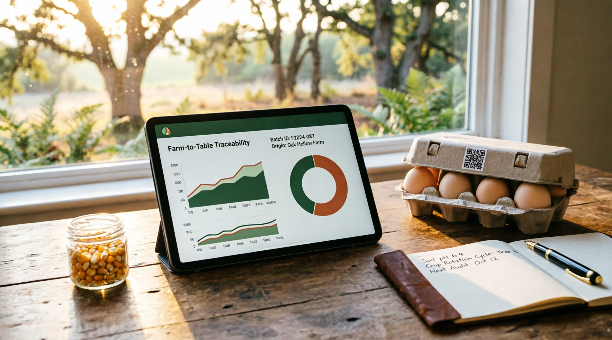

QR Code Traceability: Building Unshakeable Customer Trust Through Transparency
In today's food market, consumers are no longer just buying products—they are buying trust. They want to know where their food comes from, how it was raised, what it was fed, and whether it is safe for their families. At Feathers and CO POULTRY FARM, we have answered this demand by implementing a pioneering QR Code Traceability System on all our packaged products, setting a new standard for transparency in Cameroonian agriculture.
When a customer purchases our dressed chicken, fresh eggs, or any packaged product from Feathers and CO, they will find a unique QR code printed on the packaging. By simply scanning this code with their smartphone camera, they are instantly directed to a comprehensive digital profile of that specific batch. This is not just marketing—it is verifiable proof of our commitment to quality and safety.
"Transparency is not a feature we add to our products; it is the foundation of everything we do. When customers can see exactly where their food comes from with a single scan, trust becomes automatic."
What Information Can Customers Access?
When a customer scans our QR code, they are presented with a detailed, easy-to-read digital certificate containing:
- Farm Location: Exact GPS coordinates and address of our facility in Nkolafamba, Yaoundé, confirming the product is locally sourced.
- Batch Number: Unique identifier linking the product to its specific production cycle.
- Production Date: The exact date the birds were raised or the eggs were collected.
- Processing Date: When the product was processed, packaged, and prepared for sale.
- Feed Composition: Detailed breakdown of what the birds were fed, including our home-grown maize, soybeans, and maggot meal, with percentages of each component.
- Health Certifications: Confirmation that the batch passed all veterinary health checks and Ministry of Health quality standards.
- Vaccination Records: Complete vaccination schedule the birds received, ensuring disease prevention protocols were followed.
- Storage Conditions: Temperature and humidity logs from processing to point of sale, proving proper cold chain management.
- Sustainability Metrics: Information about the environmental impact, including solar energy used in production and carbon footprint data.
How Our Traceability System Works
Our QR code traceability system is integrated into every stage of our operations:
- Stage 1 - Farm Entry: When day-old chicks arrive at our farm, they are assigned a unique batch ID in our digital farm management system. All data from this point forward is linked to this ID.
- Stage 2 - Growth Monitoring: Our IoT sensors continuously record environmental data (temperature, humidity, ammonia levels) throughout the growth cycle. Feed consumption and water intake are logged daily.
- Stage 3 - Health Records: Every vaccination, veterinary check, and health observation is digitally recorded and linked to the batch ID.
- Stage 4 - Processing: When birds are processed, the batch ID is transferred to the packaging line. Each package receives a unique QR code that links back to the original batch data.
- Stage 5 - Distribution: Temperature and handling conditions during transport are monitored and logged, ensuring the cold chain is maintained until the product reaches the customer.
- Stage 6 - Consumer Access: The QR code on the final package allows instant access to all accumulated data, providing complete transparency from farm to table.
Benefits for Our Customers
This level of traceability provides numerous benefits to our customers:
- Food Safety Assurance: Customers can verify that their food meets the highest safety standards, with proof of health certifications and proper handling.
- Allergen and Dietary Information: Detailed feed composition helps customers with specific dietary concerns or allergies make informed choices.
- Freshness Verification: Exact production and processing dates allow customers to verify product freshness.
- Support for Local Agriculture: GPS confirmation of local sourcing allows customers to verify they are supporting Cameroonian farmers and the local economy.
- Environmental Consciousness: Sustainability metrics allow environmentally conscious consumers to verify the eco-friendly practices used in production.
- Fraud Prevention: QR codes make it nearly impossible for counterfeit products to impersonate Feathers and CO quality, protecting customers from food fraud.

Setting a New Industry Standard in Cameroon
While QR code traceability is becoming common in developed countries, it remains rare in Cameroon's agricultural sector. Most consumers have no way to verify the claims made by food producers. By implementing this system, Feathers and CO is not just differentiating ourselves—we are raising the bar for the entire industry.
We believe that transparency should be the norm, not the exception. When customers can see exactly what they are buying, with verifiable proof, it transforms the relationship between producer and consumer. It moves from blind trust to informed confidence. This is the future of food retail in Africa, and Feathers and CO is proud to be leading the way.
Technical Implementation
Our traceability system is built on robust, scalable technology:
- Cloud-Based Database: All batch data is stored securely in the cloud, ensuring it is accessible 24/7 from anywhere in the world.
- Mobile-Optimized Interface: The digital certificate page is fully responsive, providing an excellent viewing experience on any smartphone.
- Offline Capability: Critical information is cached locally, allowing access even in areas with poor internet connectivity.
- Multi-Language Support: The system supports French, English, and local languages, ensuring accessibility for all customers.
- Real-Time Updates: If any issue is identified with a batch (e.g., recall), the QR code page can be instantly updated to alert customers.
- Data Security: All data is encrypted and protected, ensuring customer privacy and data integrity.
Economic and Brand Value
Beyond customer trust, QR code traceability provides significant business value:
- Premium Pricing Justification: Customers are willing to pay more for products they can verify as safe and high-quality.
- Brand Loyalty: Transparency builds emotional connection and long-term customer loyalty.
- Recall Efficiency: In the rare event of a product recall, we can instantly identify and notify only affected customers, minimizing waste and cost.
- Quality Control Feedback: Data analytics from the system help us identify patterns and continuously improve our processes.
- Regulatory Compliance: As food safety regulations become stricter globally, our system positions us ahead of compliance requirements.
- Market Differentiation: In a crowded market, traceability sets us apart from competitors who cannot offer the same level of transparency.
At Feathers and CO, we believe that trust is earned through transparency, not marketing claims. Our QR code traceability system is our promise to every customer: when you buy from us, you are not just buying chicken or eggs—you are buying peace of mind, backed by verifiable proof. This is the standard we hold ourselves to, and it is the standard we are bringing to Cameroonian agriculture.


Marie-Claire Atangana Reply
This is absolutely brilliant! I have two young children, and food safety is my top priority. I bought your chicken last week and scanned the QR code—it showed me exactly what the birds were fed and when they were processed. This level of detail is something I have never seen before in Cameroon. Do you plan to extend this system to your eggs as well?
Feathers and CO Team Reply
Hello Marie-Claire! Thank you so much for your kind words and for taking the time to scan and verify our products—that is exactly what this system is designed for! Yes, absolutely! We have already extended QR code traceability to all our egg cartons. Each carton has a unique QR code showing the collection date, feed composition of the laying hens, and health certifications. We believe every product we sell should come with the same level of transparency. Thank you for trusting us with your family's health! 🙏